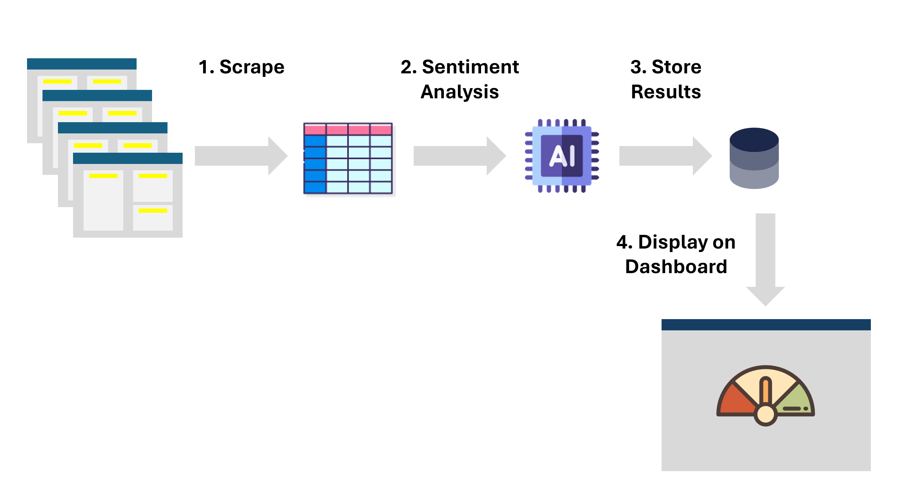

How it is Calculated
Averages the results of the sentiment analysis performed by the model finBERT (HuggingFace Library) on the headlines of 5 popular crypto news outlets.
Approach
Steps 1 to 3 are performed by a worflow in GitHub Actions that runs multiple scripts daily at 00:00:00 UTC.
-
Scrape: The top 5 crypto-only news sites are scraped using the BeautifulSoup library in Python, capturing the headlines from their home pages.
- Websites: CoinDesk, Decrypt, Blockworks, BeInCrypto, U.Today
- Sentiment Analysis: Headlines are analyzed using the finBERT model provided by Hugging Face.
-
Store Results: The results are aggregated and stored in a CSV file in a public repository.
- Calculates the average sentiment per day with the following categories Positive (+1), Negative (-1), or Neutral (0).
- Display on Dashboard: This webpage retrieves the stored scores, fetches the daily Bitcoin prices using coinGecko free API, and updates the corresponding graph.
- Scripts to Scrape, Sentiment Analysis and Aggregations: morilucas/crypto_news
- This webpage: morilucas/portfolio
Skills for This Project:
Python, HTML, JavaScript, CSS, Git, finBERT, Hugging Face, BeautifulSoup